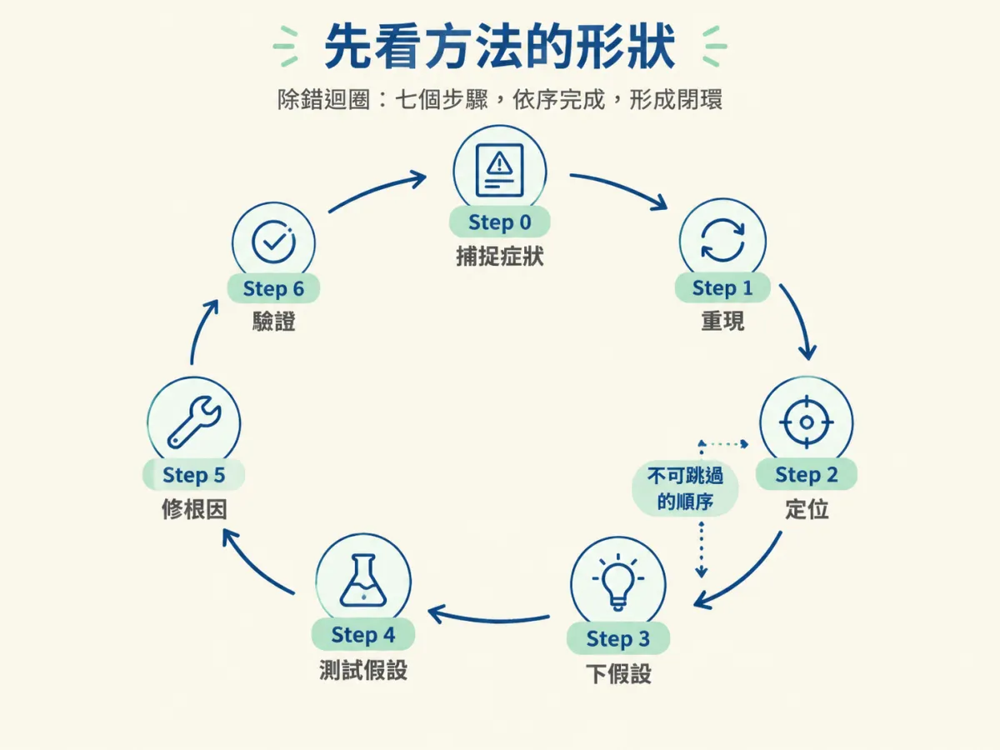
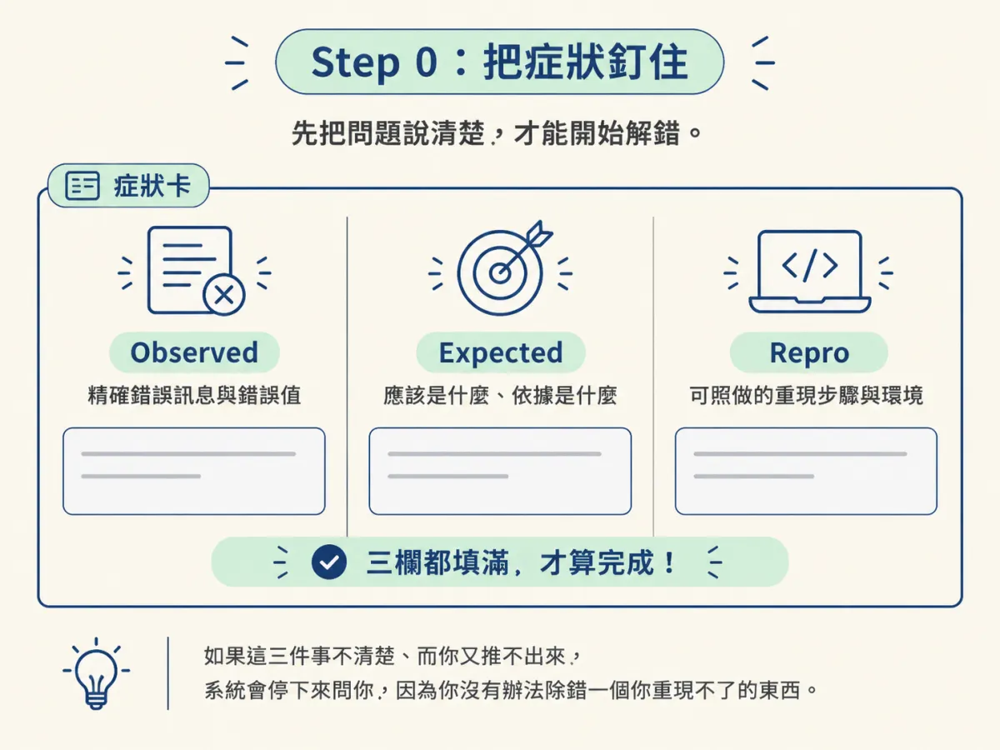
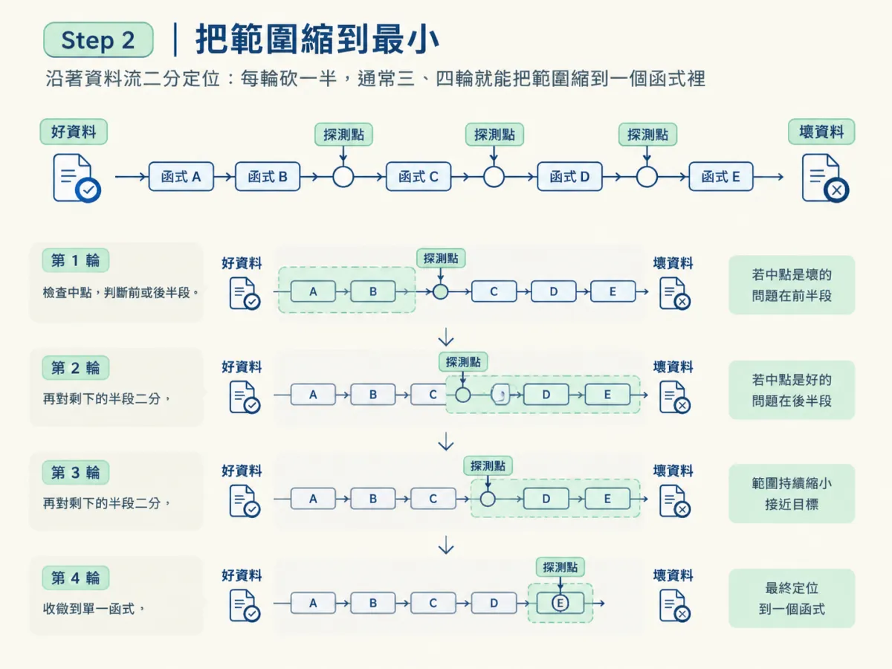
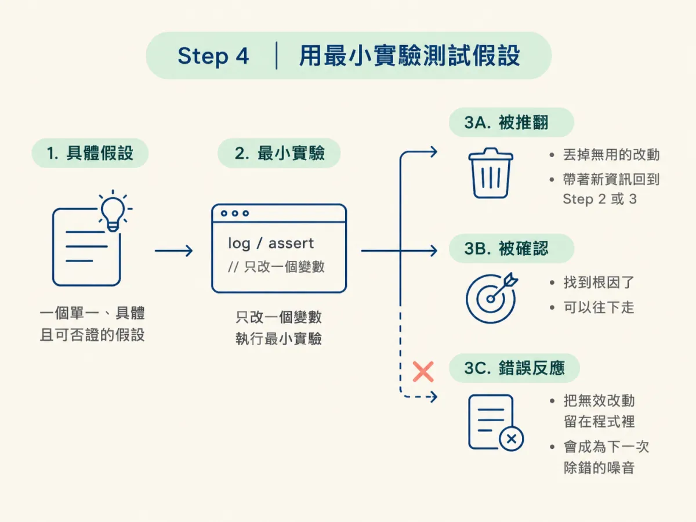
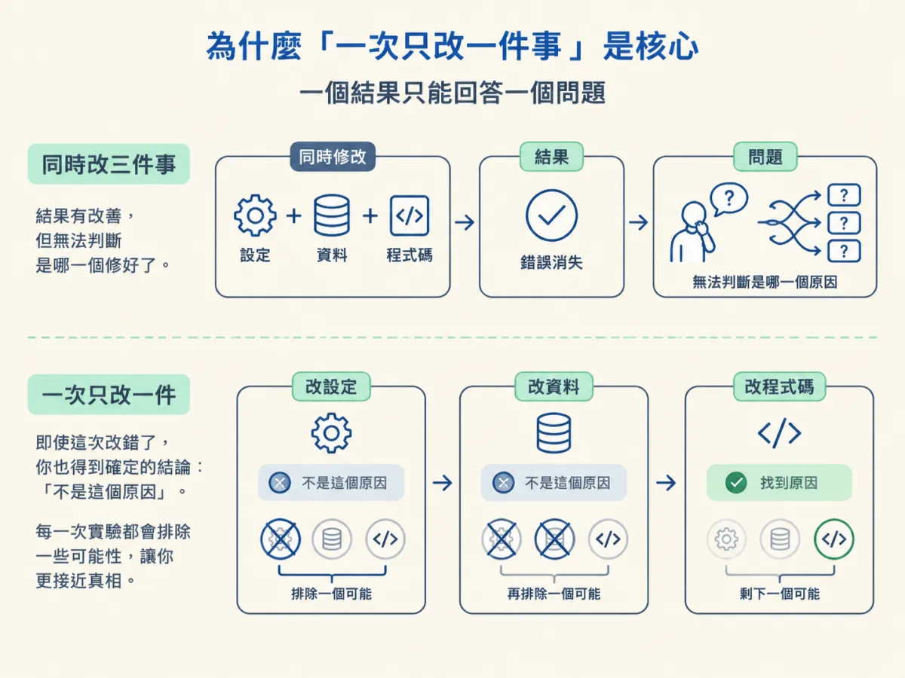

對一個可重現的普通 bug 跑完 observe → hypothesize → test 的流程，一次只改一件事，並用證據而不是直覺決定下一步。
分流做完了，確認這是一隻普通的 code bug。你打開編輯器，手放在鍵盤上。接下來的第一個動作是什麼？
如果你的答案是「先改一個地方看看」，那這一節就是為你寫的。因為那個動作本身沒有錯，錯的是它常常變成全部：改一下、跑一下、錯誤沒了、收工。這套流程每個人都會，而它正是 bug 會回來的原因：你從來沒有真的知道它為什麼壞。
除錯不是「改到錯誤消失」。它是把科學方法套到一個壞掉的程式上：你觀察失敗、形成一個具體的解釋、測試它，然後讓證據告訴你下一步該往哪裡走。這一節會把這套方法拆成可以照著跑的步驟，並且把其中唯一不能妥協的習慣講清楚：一次只改一件事。
debug skill 的 SKILL.md 把這件事定義成一個迴圈，這段話值得整段讀一次：
A structured root cause investigation, not a guess and check. Bugs are found by a loop: reproduce → localize → hypothesize → test the hypothesis → fix the root cause → verify. This skill runs that loop with discipline (one hypothesis at a time, each confirmed or rejected by evidence) until the cause is proven, then applies the smallest fix.
六個階段，順序不能跳：先重現、再定位、再下假設、再測試、再修、最後驗證。SKILL.md 另外把「先捕捉症狀」放在 Step 0，所以整份流程是七個編號步驟，其中 Step 0 是進場前的準備。注意「定位」排在「假設」前面，這是最多人偷懶的地方。他們一看到錯誤訊息就開始猜原因，卻沒有先把範圍縮小。範圍沒縮小，你的假設就只能是一句「大概是快取吧」，而這種假設沒辦法被否證，也就沒辦法教你任何事。

這套方法不需要特殊工具，但需要三個條件，缺一個就會卡住。
第一，一個能跑起來的環境。專案的啟動指令、測試指令、環境變數都要能用，否則你連重現都做不到。第二，看得到輸出的地方：終端機、log、測試報告，任何能讓你看到「實際值」的窗口。第三，一個觀察。不是「怪怪的」，而是「這個請求回 500，錯誤是 undefined is not a function，發生在 checkout 這條路徑」。
第三點聽起來很基本，但它決定了整個流程的快慢。SKILL.md 把它獨立成 Step 0，就是因為它值得在動任何程式碼之前先做完。
在碰程式碼之前，先精確寫下三件事：
- **Observed** behavior (the exact error, stack trace, wrong output, or screenshot).
- **Expected** behavior.
- **Repro**: the steps, inputs, and environment that trigger it.Observed 要精確到可以貼給別人看：完整的錯誤、stack trace、錯的那個值。不是「折扣怪怪的」，而是「訂單 A123 的折扣是 -120，應該是 0」。Expected 要說得出依據：來自規格、來自商業規則、或來自你對這段程式用途的理解。「我覺得不該是負的」也是依據，但要講清楚為什麼。
Repro 是給別人照著做也會錯的步驟：用哪個帳號、點哪裡、丟什麼資料、環境變數長什麼樣。這一欄寫不完整，後面全部都會打折。
SKILL.md 對這一關的態度很硬：如果這三件事不清楚、而你又推不出來，它會停下來問你，因為你沒有辦法除錯一個你重現不了的東西。這句話不是修辭，是整個流程的地基。

接下來要拿到一個「按下去就錯」的重現：一個失敗的測試、一行指令、一個請求。SKILL.md 的要求是 deterministic：同樣的操作，每次都會觸發。
如果它是間歇性的，工作就不是「多跑幾次」，而是找出讓它穩定下來的因素。常見的來源有四類：時序（兩個非同步動作的順序）、順序（陣列或物件的迭代順序）、資料（某一筆特殊的值）、併發（兩個請求同時打到同一筆資料）。找到那個因素，你就能把它固定住，讓 bug 從「偶爾」變成「每次」。
真的重現不了怎麼辦？答案是加觀測，不是猜著修。在可疑的路徑上加 log、加 assertion、加一個會把輸入輸出印出來的檢查，讓下一次它發生時自己留下證據。SKILL.md 說得很直接：If you truly can't reproduce it, add instrumentation to catch it and say so, do not "fix" blind.
有了穩定重現，下一步是縮小失敗的範圍，而且要在開始推理之前做。SKILL.md 給了三個方向：
- **Bisect the code path**: binary search where good input becomes bad output (logging/print at midpoints, breakpoints, or commenting out).
- **Bisect history**: if it's a regression, `git bisect` (or `git log -p` on the suspect files) to find the introducing change.
- **Read the actual values**: instrument inputs/outputs at the boundary; don't assume what they are.第一個方向是沿著資料流二分。你知道入口的資料是好的、出口的資料是壞的，就在中間印一次。如果中點已經是壞的，問題在前半段；如果是好的，問題在後半段。每一輪砍掉一半，通常三、四輪就能把範圍縮到一個函式裡。

第二個方向是沿著歷史二分，前提是這是一個 regression（以前好的，現在壞了）。指令長這樣：
git bisect start
git bisect bad HEAD
git bisect good v1.4.0這是在示範指令的用法，不是專案裡的原始碼。它的運作方式是：git 每次 checkout 一個中間的 commit，你跑一次重現，回報 good 或 bad，它再砍一半。最後它會停在「第一個壞掉的 commit」，那個 commit 的 diff 就是嫌疑犯。v1.4.0 要換成你確定還正常的那個版本或 commit。
第三個方向最容易被忽略：去讀邊界上的實際值。不是「這個變數應該是使用者 id」，而是印出來看它到底是不是。很多 bug 會在這一刻自己現形，因為你的假設跟實際值差了一個東西：型別、大小寫、時區、空字串與 null。
以剛才那個跨月訂單的例子來說，定位的結果會是：「入口的 year、month 是對的，出口的 start 是 2026-08-01T00:00:00.000Z，而資料庫裡的 createdAt 是 UTC 時間」。範圍就從整個查詢縮到「start 是怎麼被解析的」這一行。
現在才可以開始猜，但要用可以被否證的方式猜。SKILL.md 對一個好假設的定義是：
State a single, specific, falsifiable hypothesis for the root cause, e.g. "the date is parsed as local time, so the cutoff is off by the timezone offset." Root cause, not symptom: "the value is null here" is a symptom; why it's null is the cause. Resist shotgun changing several things at once.
拆開來看，一個可用的假設要滿足三件事。單一：只有一個原因，不是「可能是 A 或 B」。具體：指得出是哪一行、哪個值、哪個轉換。可否證：你能說出「如果這個假設是真的，我應該會看到什麼；如果不是，我會看到什麼」。
「大概是快取的問題」不符合任何一項。它沒有指到任何一行，也沒有說出要觀察什麼，所以你測完之後不管結果如何，都不能說它對或不對。假設如果不能被否證，它就沒有資格叫假設。
還有一個區別很關鍵：根因不是症狀。「這裡的值是 null」是症狀；「為什麼它是 null」才是原因。這個差別不是哲學問題，它直接決定你下一步要修什麼：修症狀就是把 null 夾成 0，修根因才是去問「誰應該給這個值、為什麼沒給」。
有了假設，設計一個最小的實驗去確認或推翻它：一行 log、一個 assertion、一行改動、一個單元測試。重點是「最小」：實驗只改一個變數，結果才只有一種解讀方式。
沿著上面的例子，假設是「start 被當成 UTC 午夜解析，所以本地時間凌晨的訂單被排除了」。最小的實驗就是把它印出來，像這樣（示範）：
// 示範：一行輸出，就能確認日期字串被解析成哪個時間
console.log(new Date(`${year}-${month}-01`).toISOString());如果輸出是 2026-08-01T00:00:00.000Z，而你的機器在 UTC+8，這個假設就被確認了：那個時間點換算成本地時間是八月一日早上八點，所以當天凌晨零點到八點的訂單全被排除在「八月」之外。輸出如果不同，假設就被推翻，你得帶著這個新資訊回到定位那一步。
兩種結果都有價值，但處理方式不一樣。被推翻：丟掉它，不要留著那個沒用的改動，帶著你學到的東西回到 Step 2 或 3。被確認：你找到根因了，可以往下走。最忌諱的是第三種反應：「測了但沒差，先留著吧」。那個留下來的改動會變成下一次除錯的噪音。

修法的原則只有一句：
Make the **minimal, targeted** change that addresses the proven cause. Don't fix the symptom (clamping the null), fix the cause (why it's null). Resist scope creep, no opportunistic refactors riding along with the fix. Follow the project's conventions (`AGENTS.md`, neighbouring code).「最小」不是為了省事，是為了讓結果可解釋。你改一行，錯誤消失，那條因果線是清楚的：這一行就是原因。你改六個檔案，錯誤也消失，但你不知道是哪一個改動修好的，也不知道另外五個有沒有順手種下新問題。
「順手重構」是這裡最常見的破口。你剛好在看這段程式，剛好覺得命名很醜，順手改一下，於是 diff 從一行變成四十行，而你下次回頭看的時候，已經分不出哪一行是修 bug、哪一行是美化。
修完不代表結束。這一步要做四件事，其中兩件常被跳過：
- Run the Step 1 reproduction again, confirm it now passes.
- Run the surrounding test suite, confirm no regression.
- **Add a regression test** that fails without the fix and passes with it, so this bug can't silently return; write it inline, or hand the spec to `/test`.
- **Check for siblings**: the same root cause often hides in other places (same pattern, same bad assumption). Grep for them and note or fix them.重跑重現，是確認你修的是同一個東西。跑周邊測試，是確認你沒有為了修 A 而弄壞 B。
回歸測試的重點在那句「沒有這個修就失敗，有這個修就通過」。如果你寫的測試在修之前也是綠的，它證明不了任何事。這也是判斷「這個測試值不值得留」最快的檢驗方式：把修暫時拿掉，測試會不會紅。
最後一件是找兄弟。同一個根因常常躲在別的地方：同一種寫法、同一個錯誤假設。用 grep 把同樣的模式找一遍，順手的就一起修，不能確定的就記下來。這一步是「修好」跟「不會再從別的地方冒出來」之間的差別。
整篇方法裡，只有這個習慣沒有任何例外。原因很簡單：一個結果只能回答一個問題。
同時改三件事，錯誤消失了，你學到什麼？你不知道是哪一件修好的，所以你不知道真正的根因是什麼；你也無法排除另外兩件帶來了新問題，只是現在還看不出來。下一次它再壞，你手上什麼都沒有，只能從頭再猜一次。
反過來，一次改一件，即使這次改錯了，你也得到一個確定的結論：「不是這個原因」。這個結論會把可能性砍掉一塊，讓你下一次的假設更靠近真相。除錯的進展不是靠「改對」，是靠每一次實驗都能排除一些東西。

最常見的失敗不是假設錯，是根本沒有定位就開始假設。症狀很好認：你的假設裡出現「應該是」「大概是」「可能跟⋯⋯有關」，但你說不出要在哪一行、觀察哪個值。
判準可以寫成一句話：你的假設能不能翻譯成「因為 X，所以 Y 會錯；如果把 X 改掉，Y 就會對」？ 能，就去做那個最小實驗。不能，就回到 Step 2，先把範圍縮小。
另一種常見的走偏是「把測試改鬆，讓它變綠」。那不是修好，那是把偵測器關掉。你失去的不只是這個 bug，還有以後這個測試對你的所有保護。
debug skill 可以把重現、定位、測試、修復、保護都做得比你快，這是它的強項。但它不能替你做一件事：判斷這次的結果是否真的證明了原因。
「紅燈變綠燈」不是證明，只是一個觀察。要把它變成證明，你需要看得出來：這個修動到的是不是根因、這個測試是不是真的會在沒修的時候失敗、這個 diff 是不是小到只有一種解讀。這些判斷需要你腦子裡有整套方法；沒有的話，你只能選擇相信它，而相信不是驗證。
方法屬於你，skill 只是更快套用它的方式。這句話在下一節會變成實際的操作：你會看到一個真實的 demo，以及要盯住哪些地方，才不會讓 skill 退化成「改到變綠」。
跑完一輪之後，用這四件事檢查自己是不是真的做完了：
一般 code bug 的解法，是把科學方法套到壞掉的程式上。先把症狀釘住（observed／expected／repro），再讓它穩定重現，接著把範圍二分縮小，然後下一個單一、具體、可否證的假設，用最小實驗確認或推翻它。修的時候只修根因、只改最小幅度，最後重跑重現、跑周邊測試、補一個「沒修就會紅」的回歸測試，並找出同一個根因還藏在哪裡。整條流程只有一個不能妥協的習慣：一次只改一件事，因為一個結果只能回答一個問題。
方法講完了，下一節把它交給 debug skill 跑一次。你會看到要餵它哪三件事、過程中要盯住什麼，以及怎麼用「修得夠小」判斷它是不是真的找到了根因。